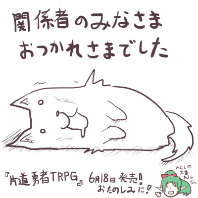

■2016-05-28 (土) 片道勇者TRPG 一段落?▼
KADOKAWA/冒険企画局さんによる『片道勇者TRPG』は、
無事大きな山を越えられたところまで来た……かな！？ という感じです。
関係者の皆さま、本当にお疲れ様でした！
まだまだやることはたくさん残っているんですけれどね。

今週も予想以上にスピード勝負な展開が多かったのと
脇からもたくさん細かい別件が入ってて、私はちょっとゲッソリめになってます。
しばらくは回復のためにマイペースに進めていきたいと考えています。
そして誠に失礼ながら、実は「監修」って
楽な仕事なのかなーと何となく思ってたのですが、
実際に関わらせていただくと想像よりだいぶ大変でした！
関係者の皆さまも常に非常に真剣に対応してくださったので、
むしろどんどんがんばりがいが出てしまった気がします。
関係者の皆さまには本当に感謝しかありません、
心よりありがとうございます！
おかげさまで、『片道勇者TRPG』の内容は
ゲームにうるさい私から見てもかなり満足度の高いものに仕上がっています。
発売日は6月18日です、ぜひご期待ください。
6～7月中には『片道勇者TRPG』に関連して、私が作ったものも
いろいろお出しできると思いますので、よければみなさまお楽しみに！
以下は気になった拍手コメント返信です。
皆さま、いつもコメントありがとうございます！
（前回のフリーダ王女の落書きに対して）
＞スカートどうするか悩み中……。そもそも
＞下着は履かせてもらえてるんですかね！！
いざそう言われると「中世頃の人達って下着履いてたのかな？」
とか調べ始めてしまうタチなんですが、チラっと調べた感じ、
この時代って履く下着はまだないんですかね？ よく分からない！
どちらにせよスカートの中は黒いポリゴンで埋め尽くされていますので
明らかにされません！
（最新の片道勇者プラスの修正「無駄に長期戦が発生してテンポを損ねるので、
弱い状態異常攻撃を味方NPCにしないように修正」に対してのコメント）
＞しかしサソリバチや他もう一匹、恐らく特殊攻撃をもつ
＞敵全体がnpcを前に停止しっぱなしというおかしな事態に
ご指摘ありがとうございます！ 今となっては、
「特殊攻撃が撃てずに止まっちゃう場合は通常攻撃をするようにする」
という感じにいじってもよかった気がしていますので、
次回修正の機会があればそうさせていただく予定です。
＞今更獲得スコアに影響でるのも困るので言わずにいましたが、
＞資産評価が2100万シルバあたりを越えると一転マイナスに
＞なってしまう不具合があります .
ギャー！ オーバーフローバグですね、ご報告ありがとうございます！
次回更新でできそうなら、レベルカウントの評価値としては
資産2100万シルバを限界値にするよう調整してみようと思います。
2016-05-28 (土)  カテゴリ: 片道勇者
カテゴリ: 片道勇者
 カテゴリ: 片道勇者
カテゴリ: 片道勇者